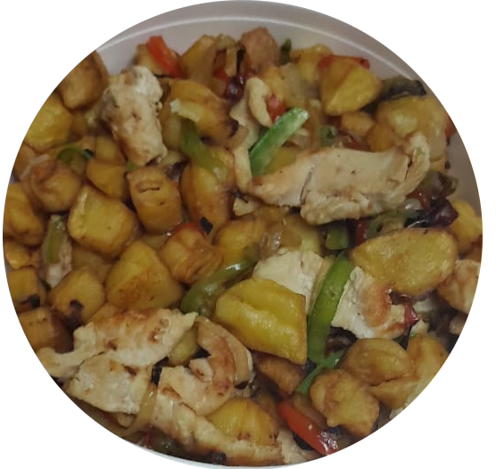

Return to the homepage
Digital recipes
Criollo

Table of Content
- About the Criollo
- Common elements in the Criollo cuisine
- Usual Ingredients
- Lets make Arroz con Pollo, the classic flavor of the Criollo Cuisine
- What i need?
- What i have to do?
- Summary
About the Criollo
"Criollo cuisine" typically refers to the traditional dishes and recipes that have developed over generations and have strong ties to the local culture and ingredients of a particular region. It embodies the culinary heritage of the area, often combining indigenous ingredients and cooking techniques with influences from colonial and immigrant cultures.
In Latin America, Criollo cuisine can vary significantly from one country or region to another, as it reflects the diversity of cultures and ingredients found throughout the continent. Each country's Criollo cuisine represents a unique fusion of flavors and cooking styles that have evolved over time.
Common elements in the Criollo cuisine
- Ingredients: Criollo dishes often incorporate locally sourced and native ingredients that are abundant in the region. This could include various fruits, vegetables, grains, meats, and seafood.
- Traditional Cooking Techniques: Criollo cuisine may include traditional cooking methods that have been passed down through generations, such as stewing, roasting, grilling, and frying.
- Spices and Herbs: The use of spices and herbs plays a significant role in enhancing the flavors of Criollo dishes. Local spices and herbs unique to each region are often used to season the food.
- Cultural Influences: Criollo cuisine is a product of various cultural influences, including indigenous, European (particularly Spanish and Portuguese), African, and Asian, depending on the history of the region.
- Comfort Foods: Many Criollo dishes are considered comfort foods, evoking a sense of nostalgia and tradition for the people of the region.
- Celebratory Dishes: Some Criollo dishes are reserved for special occasions, celebrations, and holidays.
Usual Ingredients
- Rice: Rice is a staple in many Criollo dishes, often served as a side or as a base for various stews and dishes.
- Beans: Different types of beans, such as black beans, red beans, or kidney beans, are commonly used in Criollo cuisine to prepare hearty stews and bean-based dishes.
- Beef: Beef is used in various stews and grilled dishes in Criollo cuisine, such as ropa vieja (shredded beef stew) and asado (grilled beef).
- Corn: Corn is widely used in Latin American cuisine, either as cornmeal for making tortillas, arepas, or tamales or as whole kernels in salads and stews.
- Chicken: Chicken is a widely used protein in Criollo cuisine, featured in dishes such as arroz con pollo (rice with chicken) and pollo guisado (stewed chicken).
- Fish and Seafood: In coastal regions, fish and seafood are prevalent in Criollo dishes, including ceviche and seafood stews.